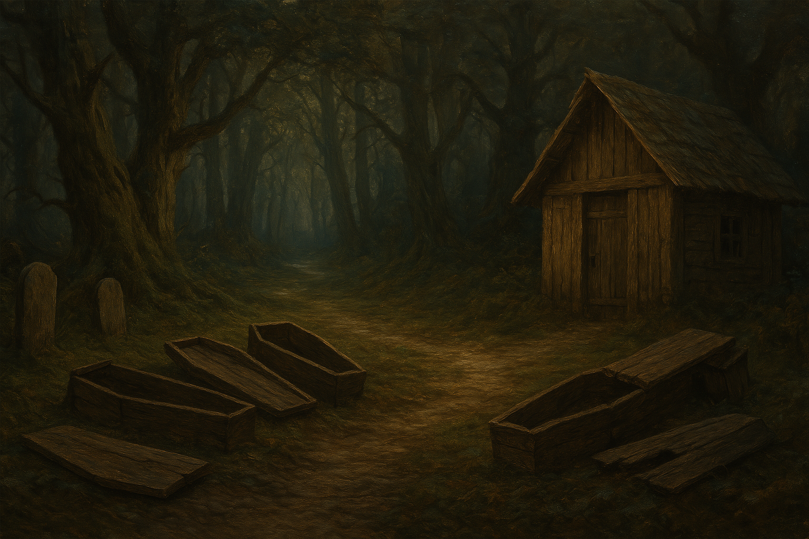
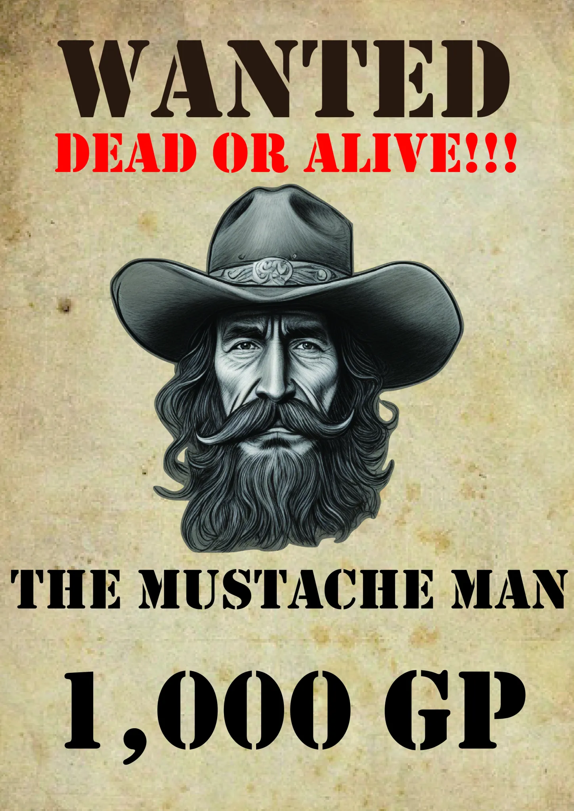

Chapter 2: The Siren's Cemetery
The Elite Bloodline


The Elite Bloodline
15049.03.17
雷亞和羅羅兩人決定先去附近的商店街逛一逛，他們和路人打聽之後，找到了三間甜點店。第一家很明顯是間連鎖糖果店，繽紛的色彩，商業化的設計，以及擠不進去的店鋪，整間店都是孩子們的吵鬧聲；第二家店看起來是雜貨店，外面有各種甜點；最後一家看起來十分破舊，但有時候最好吃的東西總會出現在這種地方。兩人最終先擠進去了第一家糖果店，頹妮甜心，以秤重的方式買了兩袋糖果，要價十分昂貴。羅羅似乎發現老闆可能和他一樣，是個妖精。
接著，雷亞想起自己有抓小動物的捕獸夾，想去附近的森林抓隻小動物，透過動物溝通術，來打聽關於幽深林的事。於是兩人走到貝瑟頓側邊城門的樹林入口處架設陷阱。
因為時間不夠的關係，兩人回程後只去了最破舊的甜點店，老比爾。在老闆的介紹下，他們試吃了一桶老闆自製的各色糖果，味道十分鮮甜可口，價錢也便宜到羅羅最終買了一大麻布袋的糖果背在身後，還比第一家店的一小袋還要便宜。
兩人接著回頭檢查捕獸夾，發現有一隻松鼠被夾在上面。聽到松鼠吱吱叫，雷亞使用動物溝通術，馬上聽見松鼠一連串的粗口。在雷亞嘗試溝通失敗後，他威嚇了松鼠，卻發現松鼠嚇暈了。於是他將松鼠先裝到自己的小袋子內，兩人決定去一趟鐵匠鋪換武器，以及去雜貨店補充物資，就到貝瑟頓的正門口和其他人會合。

經過一番討論，阿龍、毛毛和鑰決定先去昨晚相遇的酒館「吟遊詩人之歌」打聽關於幽深林的情報。一大早的酒館內客人很少，和前一晚的擁擠截然不同。老闆和他們聊過後，表示大家只知道幽深林很危險，不要進去，但裡面到底有什麼？為何危險？沒有人清楚。買了一些食糧後，阿龍詢問老闆是否有賣菸草。老闆自己從口袋中掏出一點自己在抽的菸草，分享給阿龍。只見阿龍從背包拿出一個不成比例的小的煙斗，嘗試使用。他和其他人說明，這是他爸爸留給他的東西，因此他很想要用用看。第一次抽菸草，控制不好的力道，不僅讓阿龍不斷咳嗽，吐出的煙也燻的其他人十分不舒服。離開前，冒險者們也問了老闆是否有懸賞令。他們有點懷疑身分不明的羅羅（到現在他們還不知道羅羅的名字）是否有可能是通緝犯，因此想確認看看。老闆拿出了一張懸賞令，上面有個大鬍子，但似乎這名大鬍子還沒有出現在貝瑟頓過。這個人很明顯和羅羅長得不一樣，因此冒險者們稍微放心了一點。
離開酒館後，他們依照酒館老闆的建議，來到附近的煙斗店煙煙一息。這家店只有賣比較平價的煙斗，但阿龍還是看得很開心。購買煙斗後，老闆還給了他一張會員卡，表示這家店是連鎖店，到其他店都可以使用，會有會員的優惠價。冒險者們也向他詢問關於幽深林的消息，他並不知道，但也表示好奇。老闆和同行的毛毛和鑰答應，如果他們去了幽深林，回來以後告訴他那邊有什麼狀況，他會再給他們兩人各一張會員卡。毛毛也得到了許可，之後要和他拿他們用來製作煙斗的木頭原料。
三人花了一些時間，詢問到了附近一間魔法用品店，巫師先生的各種藥水。走入巷弄中的店內，左右兩側都是玻璃櫥窗，放滿常見的生命藥水，但也不便宜。經過店內員工的介紹，擺在櫃檯前的事比較特別的藥水，顏色琳瑯滿目，但價錢都至少要 10 枚金幣以上。店員介紹了幾款，包含要價15金幣的黃色藥水，可以讓人身體發光一分鐘；要價20金幣的綠色毒液，可以用來塗在武器上、敵人皮膚上，或是讓人喝下去；要價50金幣的藍色藥水，可以讓人飛在空中五分鐘。最後，櫃檯後方還有一罐看起來用金色裝飾雕琢的藥水，要價1000金幣。根據店員的說明，喝下去以後可以跟一名你認識的人交換身份。冒險者們看了很心動，但最終還是決定先不花錢買這些。
最後，冒險者們來到正門口的衛兵站，和衛兵詢問懸賞令的事。公告欄上，除了賞金高達1000金幣的大鬍子外，還有一些其他的臉孔，但都和羅羅完全不像。底下兩排則是失蹤孩童的肖像，但有些已經過太久，孩子的長相大概不會是現在這樣了。而這些失蹤的孩子，有可能就是走失在幽深林中的。
冒險者們會合完成後，大家在城門口就地用午餐，同時羅羅也在大家的請求下做了個較為完整的自我介紹，大家得知他是個有一定歲數的妖精，而他的很多所作所為，都是因為一個神秘的「祂」的緣故。
午餐後，大家便動身前往幽深林。此時已經清醒的松鼠被安置到了鑰的推車內，在鑰的照顧下穩定許多，而他似乎也把鑰是為了夥伴，讓原本抓到他的雷亞有些失望。走入林中，光線與聲響逐漸消失，像是被下了咒一般。冒險者們緩步前進，四周安靜的像是生命不曾存在過一樣，直到他們聽見了遙遠的腳步聲。毛毛爬上樹，快速地跑到前方偵查，看見了兩名拿著火把的衛兵朝他們走來。這和在衛兵站打聽到的消息一致，幽深林除了固定來巡守的衛兵外，基本上不會有任何人進來。
冒險者們等到衛兵接近後，便和他們打聽消息，得知這條路沒有岔路，最深處即是「海妖墓園」，那裡有個給守墓人休息的小木屋。衛兵也透露他們因為年資較淺，被要求定期來幽深林巡守。
繼續往前數個小時，冒險者終於看見陰影在一處硬生生地斷開。對於這奇異的景象，冒險者們也感到十分緊張。阿龍往前走，踏出了陰影，接著他便聽見了嘎嘎作響的木板聲，在他眼前數個棺材開始翻開。
冒險者們進入了戰鬥，棺材內的骷髏一一爬出，部分冒險者們甚至在腦中聽見了美妙的歌聲，讓他們難以行動。在雷亞施放了雲霧術，限制了冒險者們和骷髏的視線範圍後，戰局才稍微被控制了下來。重傷的毛毛逃到了前方的小木屋內，發現骷髏的攻擊似乎打不到小木屋內，暫時可以得到一點時間休息。
最終，在阿龍、雷亞和毛毛的揮砍、羅羅的遠距離輸出，以及鑰適時輔助之下，骷髏們終於被打倒。冒險者們搜刮了戰場後，得到了數根完整且質地良好的骨頭，接著便走入了小木屋內休息。此時的天色也暗了。
15049.03.17
Leah and Roel decided to first stroll through the nearby shopping district. After asking some passersby, they found three dessert shops. The first was obviously a chain candy store, all bright colors, commercial design, and such a packed interior that you could barely squeeze in, filled wall to wall with the noise of children. The second looked more like a general store that happened to sell sweets outside. The last one looked terribly shabby, though sometimes the best food turns up in places like that. In the end, the two of them squeezed into the first candy shop, Tweenie's Sweeties, and bought two bags of candy by weight, at a very steep price. Roel seemed to notice that the owner might be an elf like him.
Next, Leah remembered that she had an animal trap and thought of catching a small creature in the nearby woods so she could ask it about Deepwood using Speak with Animals. So the two went to the wooded entrance near Batherdon's side gate and set the trap there.
Because they were short on time, on the way back they only visited the most run-down dessert shop, Old Bill's. At the owner's recommendation, they sampled a whole bucket of his homemade assorted sweets. They were wonderfully rich and delicious, and so cheap that Roel ended up buying a huge burlap sack of candy to carry on his back, for less money than the tiny bag from the first shop.
Afterward, the two went back to check the trap and found a squirrel caught in it. Hearing the squirrel squeaking, Leah used Speak with Animals and was immediately met with a nonstop stream of foul language from it. After failing to communicate with the squirrel, she tried intimidating it, only to discover that it had fainted from fear. So she stuffed it into her small pouch for the time being. The pair then decided to visit a blacksmith to swap weapons, stop by a general store for supplies, and meet the others at Batherdon's main gate.
After some discussion, Al-lon, Fur, and Kaname decided to return first to the tavern where they had met the previous night, The Bard's Song, to ask about Deepwood. The tavern was nearly empty that morning, in stark contrast to how crowded it had been the night before. After chatting with them, the owner said that everyone knew Deepwood was dangerous and that people should stay out, but no one really knew what was inside or why it was dangerous. After buying some provisions, Al-lon asked whether the owner sold tobacco. The owner pulled out a bit of the tobacco he was smoking from his own pocket and shared some with Al-lon. Al-lon then produced an absurdly tiny pipe from his backpack and tried using it. He explained to the others that it had belonged to his father, and he had always wanted to try it. Because he could not control his first attempt at smoking, Al-lon ended up coughing nonstop, and the smoke he blew out made everyone else deeply uncomfortable as well. Before leaving, the adventurers also asked the owner whether he had any wanted posters. They were a bit suspicious that the unidentified Roel, whose name they still did not know at that point, might possibly be a fugitive, so they wanted to check. The owner pulled out a wanted poster showing a large bearded man, though apparently that bearded man had never appeared in Batherdon. The man looked nothing like Roel, which reassured the adventurers a little.
After leaving the tavern, they followed the owner's recommendation and went to a nearby pipe shop called Smokey Smokey. The shop only sold cheaper pipes, but Al-lon still looked delighted. After buying one, the owner also gave him a membership card, explaining that the store was part of a chain and that he could use the card at other branches for discounted member prices. The adventurers asked him about Deepwood too. He did not know much, though he admitted he was curious about it. The owner promised Fur and Kaname that if they went into Deepwood and later came back to tell him what it was like, he would give each of them a membership card as well. Fur also received permission to ask him later for some of the wood material used to make pipes.
The three spent some time asking around and eventually found a nearby magic shop called Mister Wizard's Potions of Everything. Inside the little shop in the alley, glass cases lined both sides, filled with ordinary healing potions that were common enough but hardly cheap. The shop staff introduced the more unusual potions displayed near the counter, a dazzling array of colors, each priced at no less than ten gold coins. Among them were a yellow potion costing fifteen gold that made a person's body glow for one minute, a green venom costing twenty gold that could be applied to a weapon, smeared on an enemy's skin, or forced down someone's throat, and a blue potion costing fifty gold that let a person float in the air for five minutes. Finally, behind the counter was a bottle ornamented in gold that cost one thousand gold coins. According to the clerk, drinking it would allow you to swap identities with someone you knew. The adventurers found it very tempting, but in the end decided not to spend money on any of those potions just yet.
Finally, the adventurers went to the guard post at the main gate and asked about wanted posters there. On the notice board, besides the bearded man with a bounty of one thousand gold, there were several other faces, but none of them looked anything like Roel. Beneath those were two rows of portraits of missing children, though some had been missing for so long that they surely no longer looked as they did in those pictures. These missing children might well have been the ones who had wandered off into Deepwood.
Once the adventurers had reunited, they ate lunch right there at the gate. At the others' request, Roel also gave a somewhat fuller introduction of himself, and they learned that he was an elf of some age, and that many of the things he did were because of some mysterious "it."
After lunch, everyone set out for Deepwood. The squirrel, now awake, had been placed in Kaname's cart, and under Kaname's care it had grown much calmer. It even seemed to regard Kaname as a companion, which disappointed Leah somewhat, since Leah had originally been the one to catch it. Once they entered the forest, light and sound gradually seemed to disappear, as though the place were under some kind of curse. The adventurers moved forward slowly. The surroundings were so quiet that it felt as though life had never existed there at all, until they heard distant footsteps. Fur climbed a tree and quickly rushed ahead to scout. He saw two guards carrying torches walking toward them. This lined up with what they had learned at the guard post: aside from guards who routinely patrolled it, basically no one entered Deepwood.
Once the guards drew near, the adventurers asked them for information. They learned that this path had no forks, and that at its deepest point lay the Mermaid Graveyard, where there was a small hut for the gravekeeper to rest in. The guards also let slip that because they were relatively new to the job, they had been assigned regular patrols into Deepwood.
After several more hours of travel, the adventurers finally saw a strange sight: the shadows ahead ended abruptly, as though cut off by force. The group was understandably tense at this bizarre phenomenon. Al-lon stepped forward and crossed out of the shadow. The instant he did, he heard the creaking of wood, and several coffins in front of him began to open.
The adventurers were thrown into battle. Skeletons climbed out of the coffins one by one, and some of the party even heard beautiful singing in their minds, making it difficult for them to act. Only after Leah cast Fog Cloud, limiting the vision of both the adventurers and the skeletons, did the fight come somewhat under control. Badly injured, Fur fled into the small hut up ahead and discovered that the skeletons' attacks did not seem able to reach inside, giving him a brief chance to recover.
In the end, thanks to the slashing attacks of Al-lon, Leah, and Fur, Roel's ranged support, and Kaname's timely assistance, the skeletons were finally defeated. After looting the battlefield, the adventurers obtained several intact, high-quality bones, and then entered the little hut to rest. By then, night had already fallen.